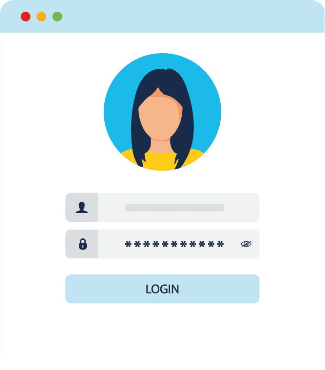

Explain the basics of being safe online, including what cybersecurity is and its potential impact.
Explain the most common cyber threats, attacks and vulnerabilities.
Explain how organizations can protect their operations against these attacks.
Access various information and resources to explore the different career options in cybersecurity.
Module 3 - Protecting your Data and Privacy
Welcome
Chapter 3.4 - Safeguarding Your Online Privacy
3.4.1 Two Factor Authentication
Popular online services, such as Google, Facebook, Twitter, LinkedIn, Apple and Microsoft, use two
factor authentication to add an extra layer of security for account logins.
Besides your username and password or personal identification number (PIN), two factor
authentication requires a second token to verify your identity. This may be a:
physical object such as a credit card, mobile phone or fob
biometric scan such as a fingerprint or facial and voice recognition
verification code sent via SMS or email.
Click
here
to find out more about two factor authentication.
Be careful!
Even with two factor authentication, hackers can still gain access to online accounts through phishing
attacks, malware and social engineering.
3.4.2 Open Authorization
Open authorization (OAuth) is an open standard protocol that allows you to use your credentials to
access third-party applications without exposing your password.
Let see what this means in practice:

You are looking forward to registering for Cisco’s ‘Cybersecurity Essentials,’ the next course
in this series, to help you develop your career. But you must be logged into the eLearning
portal to do so.
You can’t remember your login details, but that’s OK. The portal gives you the option of logging
in using your credentials from a social media website such as Facebook or via another account
such as Google.
So instead of having to reset your login details, you log into the eLearning portal using your
existing social media accounts and register for your next course with ease. You can’t wait to
get started!
3.4.3 Social Sharing
You decide to update your new job position on your social networks. When doing so, one of the sites
asks you to update your profile information to ensure you receive the content that you really don’t
want to miss!
You take a look at the missing fields. Which ones do you fill in? Remember, answering correctly will
improve your privacy settings, so think carefully about the information you want to share online.
Which of the following information you want to share online?
Select two correct answers
Explanation:
In order to safeguard your privacy on social media, it’s important to share as little personal
information as possible. You should also check your social media settings so that only people you
know can see your activities or engage in conversations with you.
The more information you share online, the easier it is for someone to create a profile about you
and take advantage of you, both online and offline.
3.4.4 Don't Get Spoofed
A simple forged or spoofed email can lead to a massive data breach and perhaps cause irreversible
damage to your reputation.
The Internet is a great tool for not only accessing information quickly and easily but also for
communicating with friends, family and colleagues. But did you know that anyone with physical access to
your device or router can view what websites you’ve visited? And that every time you send an email, it
is readable by anyone who has access to the digital chain between you and your recipient?
So, what can you do?
3.4.5 Email and Web Browser Privacy
These problems can be minimized by enabling the in-private browsing mode on your web browser. Many
of the most commonly used web browsers have their own name for private browser mode:
Microsoft Internet Explorer: InPrivate
Google Chrome: Incognito
Mozilla Firefox: Private tab or private window
Safari: Private browsing
incognito
When private mode is enabled, cookies — files saved to your device to indicate what websites
you’ve visited — are disabled. Therefore, any temporary internet files are removed and your
browsing history is deleted when you close the window or program. This may help to prevent
others from gathering information about your online activities and trying to entice you to
buy something with targeted ads.
Even with private browsing enabled and cookies disabled, companies are constantly developing
new ways of fingerprinting users in order to track their online behavior. For example, some
intermediary devices, like routers, can gather information about a user’s web surfing
history.
Ultimately, it is your responsibility to safeguard your data, your identity and your computing
devices. So, the next time you go to send an email or browse the Internet, why not check to make
sure you’re following all the guidelines outlined in this module? Just a few simple precautions now
could save you from having to deal with problems later.